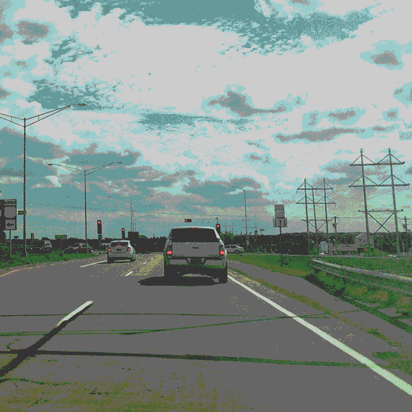

--- enter
==> [once] intro
==> [highwayStep>=69] walked-lot
==> [highwayStep>=4] walked-bit
--- intro
[cont] I love to go for a drive!! {nice|you drive?}
You may need your keys though.. {for what?}
==> click
--- walked-bit
==> [once] walked-bit-once
--- walked-bit-once
[cont] I'm getting tired just looking at you! {yes,}
[cont] We'll never get there at this rate.. {yes!}
==> click
--- walked-lot
==> [once] walked-lot-once
--- walked-lot-once
[cont] You're pretty committed to this, huh. {...}
I think we're still ways away. {hmm...}
==> click
--- click
[!foundVehicle] Gosh isn't walking tiring? Wouldn't you like to get your keys? {maybe?}
[+foundVehicle,highwayStep<=68] Gosh isn't walking tiring? Wouldn't you like to get your keys? {yes.}
[+foundVehicle,highwayStep>=69] Don't you want those keys? {mmm...}
==> click
--- has-keys
Yes!! Put your keys in the car and we'll go for a drive!
==> has-keys